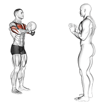
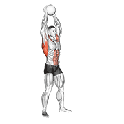
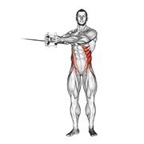

技术全解析
一句话结论：先修顺序，再加力量，最后加精度。用 50%-60% 速度做 10 次空挥，只要有 8 次能感到"腿比手累"，这一页后面的参数才对你有效。
发力原理 — 鞭打效应
羽毛球击球不是"用手打"，是全身动力链的传递。力量从地面开始，通过下肢→核心→上肢传递到球拍。
动力链顺序：脚蹬地 → 髋转动 → 核心传递 → 肩内旋 → 肘伸展 → 前臂旋内 → 手腕闪动 → 击球。任何一环断裂，力量都会损失。
⚡ 发力链辅助练习（动图）
药球与绳索是练习"由下至上"传导最直观的工具：先慢速感受顺序，再逐步加速。



动图素材 © Gym visual — gymvisual.com（180×180，经 hasaneyldrm/exercises-dataset 再分发，保留署名）；来源与逐文件对照见 images/exercises/README.md。
握拍技术
握拍是所有技术的基础。握拍不对，后面所有技术都会受影响。
正手握拍
虎口：对准拍面窄边（拍框侧棱）
手指：食指稍前于拇指，像握鸡蛋一样
掌心：留空，不要握死
松紧：准备时放松，击球瞬间握紧
反手握拍
转换：从正手握拍，拇指顶到拍柄宽面上
拇指：发力点，顶住拍柄
食指：收回，与中指并拢
发力：拇指顶推 + 手腕外旋
网前技术
搓球
| 要素 | 要点 |
|---|---|
| 握拍 | 放松握拍，靠手指控制 |
| 击球点 | 网前最高点，抢高点 |
| 拍面 | 切削球托侧面，产生旋转 |
| 力量 | 轻柔，靠手感而非力量 |
推球
| 要素 | 要点 |
|---|---|
| 时机 | 对手回球质量不高时使用 |
| 动作 | 拍面稍后仰，向前推送 |
| 落点 | 对方后场两角 |
| 变化 | 可配合假动作，先搓后推 |
勾球
| 要素 | 要点 |
|---|---|
| 动作 | 拍面斜切，改变球路方向 |
| 隐蔽 | 准备动作与搓球相同 |
| 落点 | 对方网前对角 |
| 时机 | 对手站位偏后时使用 |
后场技术
吊球
动作：与高远球准备动作一致，击球瞬间减速
拍面：稍后仰，切削球托底部
落点：对方前场，贴网下落
变化：轻吊、劈吊、拦吊三种
杀球
起跳：双脚起跳，身体后仰成弓形
击球点：身体前上方，手臂伸直
发力：全身协调发力，不是只用手臂
落点：对方身体或边线附近
杀球常见错误：①只用手臂甩（没有转体）②击球点太低（起跳时机不对）③杀球太猛（控制比力量重要）④杀球后不回位（杀完就站着看）
技术训练顺序
分层处方 — 技术专项（三档照做）
同一套动作，三档的差别在速度、球数和「一次改几个点」。一次只改一个环节，改完练满 3 次课再评估。
RPE 是主观用力程度：10 分是拼尽全力，6 分是还能说几句话。
基础版 打球 ≤1 年
- 动作：高远球空挥 → 定点喂球，一次只练 1 项技术。
- 组次：空挥 3 组 × 15 次，定点喂球 3 组 × 10 球。
- 落点：后场目标圈直径 1 米，圈心距底线 1 米以内。
- 强度：RPE 5，速度压到 50%-60%，不用全力。
- 频率：每周 3 次，同一技术两次之间 ≥24 小时。
- 恢复：组间 60-90 秒；杀球这类发力项组间 ≥2 分钟。
- 单次上限：单个技术 20 分钟，总球数 ≤60 球。
- 进阶触发：10 球里 ≥7 球落在指定 1 米区域内。
进阶版 每周打 3-4 次
- 动作：多球 + 落点控制，场上放 3 个目标圈，高远球、吊球、杀球交替。
- 组次：6 组 × 12 球，每组记录进圈球数。
- 落点：3 个圈直径各 1 米，分放在对方后场两角与中路。
- 强度：RPE 7，速度 70%-80%，动作开始变形就退回上一档速度。
- 频率：每周 4 次，其中 1 次放在对抗课里验证。
- 恢复：组间 45-60 秒；杀球日两次训练间隔 ≥48 小时。
- 单次上限：30 分钟技术专项，总球数 ≤100 球。
- 进阶触发：连续 2 次训练都做到 10 球 ≥8 球进圈，且录像里看不到"手先走"。
精英版 每周 ≥5 次
- 动作：速度-精度阶梯，50% → 70% → 85% 逐级升速，偏差超标就退回上一级。
- 组次：8 组 × 10 球，每一级连续得 5 分才允许升速。
- 落点：圈直径 1 米，按横向偏差计分，超过 30 cm 不计分。
- 强度：RPE 8，心率 3 区；85% 速度下动作不允许走形。
- 频率：每周 5 次，其中 1 次是压力测试（计时或计分）。
- 恢复：组间 30-45 秒；两次高速度击球课间隔 ≥48 小时。
- 单次上限：40 分钟；赛前 48 小时只保留手感，2 组 × 10 球轻打。
- 进阶触发：85% 速度下 10 球偏差 ≤30 cm，且肩、肘训练后无酸痛。
自测与进阶标准 — 技术
每 2 周测一次，用同一批球、同一个搭档喂球。测试顺序固定，先空挥再喂球。
| 测试动作 | 通过标准（数字） | 不达标时的退阶 |
|---|---|---|
| 空挥顺序检查 录像 10 次高远球空挥 |
≥8 次看得到"先转髋、手后到"，且练完腿比手臂更累 | 退到分解练习：只做脚蹬地 + 转髋，3 组 × 10 次，先不拿拍 |
| 定点落点 10 球打进 1 米直径目标圈 |
基础 ≥5 球 · 进阶 ≥8 球 · 精英在 85% 速度下 ≥8 球且横向偏差 ≤30 cm | 目标圈放大到 2 米，速度降到 50%，3 组 × 10 球 |
| 握拍松紧切换 连续挥拍，检查击球瞬间是否握紧 |
10 次里 ≥8 次在击球点握紧，且 20 次之后前臂不酸胀 | 用毛巾卷练松紧节奏，2 组 × 20 次，速度放慢一半 |
| 网前搓球质量 20 球网前搓球 |
≥14 球过网、落点进发球线前 50 cm，且有明显旋转 | 先做固定高度搓球，3 组 × 10 次，只要求"球转"，不管落点 |
| 连续 20 拍多拍质量 多球连续 20 拍，录像回看发力顺序 |
≥16 拍顺序正确（不是只用手臂），最后一拍速度下降 <10% | 降到 12 拍 × 3 组，组间 90 秒，先保证每拍顺序对 |
| 反手位高远球到位率 10 球反手后场高远球 |
≥6 球落在底线后 1 米区域内 | 先做"肘领先"空挥 3 组 × 10 次，加毛巾甩 2 组 × 10 次，再回到喂球 |
错误 → 原因 → 纠正
先拍侧面 30 秒慢放，再对号入座。一次只修一条，修完再拍照对比。
| 错误（录像里看得见） | 原因 | 纠正 |
|---|---|---|
| 肩膀先动、脚没反应，击球瞬间后脚没有蹬转 | 只用手臂发力，动力链（力量从脚一路传到手的顺序）从下端就断了 | 空挥时把注意力放在后脚前脚掌，10 次里 ≥8 次感到大腿参与；配 3 组 × 10 次分腿蹲蹬伸 |
| 击球点太低，球压不上去或者打不出高远 | 架拍位置太低，加上到位或起跳时机偏晚 | 拍头举到头后约 30 cm、肘高于肩；定点喂球 3 组 × 10 球，只检查"拍头在头后" |
| 高远球只到中场，打不到底线 | 引拍太快没有蓄力，加上缺内旋（前臂向内转，最后加速靠它） | 节奏改成"慢-慢-快-慢"：架拍 1 秒、引拍 0.5 秒、击球 0.1 秒、随挥 0.3 秒；空挥 20 次再打 20 球 |
| 网前球总是弹太高 | 拍面后仰过多，或者手腕忍不住主动发力 | 拍面后仰 15-20 度，触球点控制在网带以下 10 cm 以内；原地对放 3 组 × 30 次 |
| 杀球后肩前侧痛，抬手有卡顿感 | 末段用肩膀硬拉，而不是靠前臂加速收尾 | 先停杀球，改做轻阻力弹力带内旋 3 组 × 15 次；疼痛超过 48 小时先找医生或康复师 |
| 打完一整场只有手腕酸，前臂没感觉 | 反手用了旋前肌代替外旋，发力肌群用错了 | 反手位"肘领先"空挥 3 组 × 10 次，肘走在手前面；熟练后再加喂球 |
精英细节 — 同样动作，高手多做什么
- 发力与启动时机：力量峰值出现在触球前 20-40 毫秒，不是触球那一刻才使劲；启动步落地则要卡在对手引拍结束的瞬间。空挥时把"最用力的一瞬间"往球靠近的方向提前。
- 分腿加载：落地瞬间髋已预转 15-20 度，把落地当作上弦，脚一蹬就能释放，每次启动省 0.05-0.1 秒。
- 节奏：用"慢-慢-快-慢"的节奏差骗对手，而不是把挥拍整体加快。对手读的是你的节奏，不是你的绝对速度。
- 预判：盯对手的拍面和手腕，不盯球飞。到位时间能提前 0.1-0.2 秒，等于多一步的余量。
- 个体化：肩关节活动度不够的人，把架拍放低 5-10 cm，别硬学极限的头顶后方架拍。动作能重复，比动作好看值钱。
- 比赛期处理：比赛周把技术量降到平时的 40%，只做手感（2 组 × 10 球轻打），不在赛前改造任何动作。
- 单点改造：一次只改一个环节，改完练满 3 次课再评估。一次改两个点，录像上你会看不懂自己。
这 7 条不用同时练。挑一条放进本周训练，用录像收尾，再换下一条。
安全边界：肩前侧痛、杀球后肩"卡住"抬不起来、肘内侧痛、手腕尺侧痛，先停该项技术，改练下肢与核心。疼痛超过 48 小时、出现夜间痛或关节肿胀，先找医生或康复师评估，别靠加练硬扛。青少年每周高速度杀球建议控制在 150 次以内。任何新技术在动作稳定前不做全力击球。
依据说明：本页参数来自三类来源：NSCA CSCS 训练学框架（组次、RPE、组间休息、恢复窗口的通用区间）、羽毛球项目惯例（落点圈直径、多球拍数、空挥次数）、运动生理常识（鞭打式动作靠近端到远端的加速顺序，任何一环提前发力都会漏力）。文中的毫秒与厘米阈值是本页用于分档的教练口径，不是官方测试标准。本页不引用没有出处的具体研究数据。
最后更新：2026-09-16 · 内容标准 v2 · 发现错误或有更好的练法？在 GitHub 提 Issue · 文件：23-technique-analysis.html